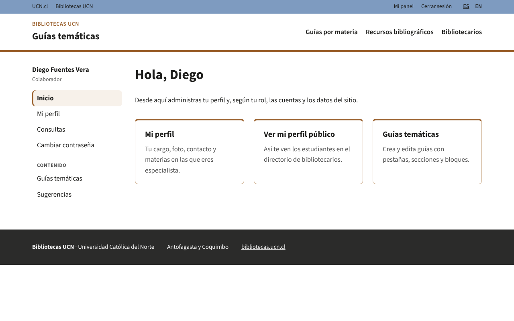
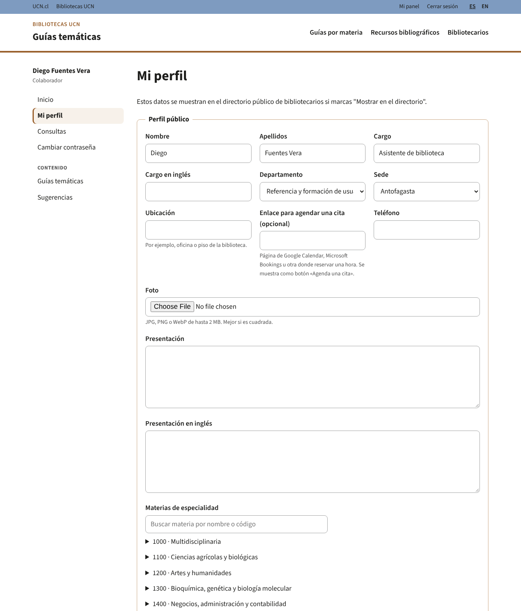
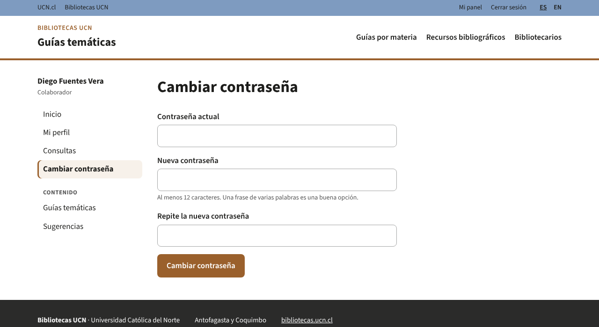
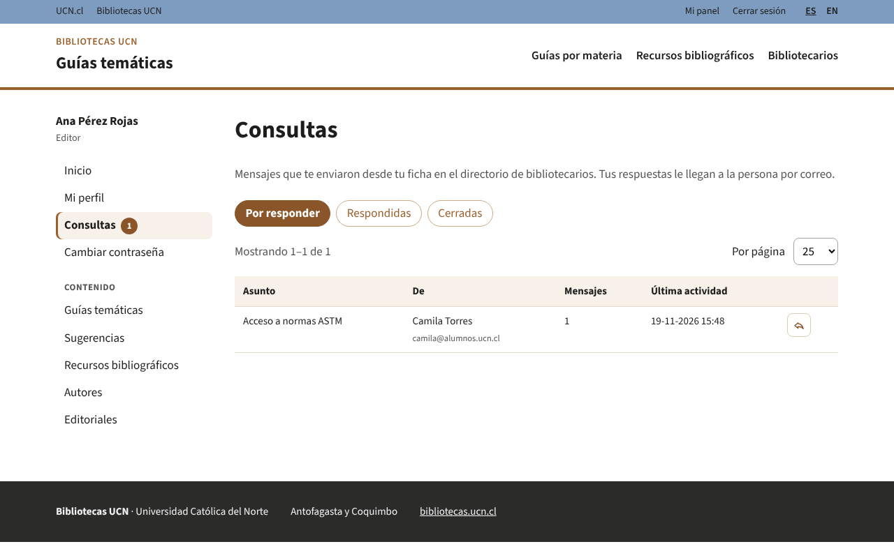
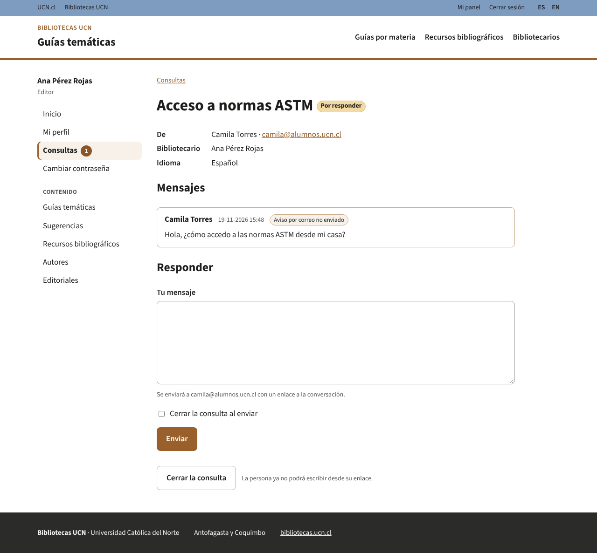
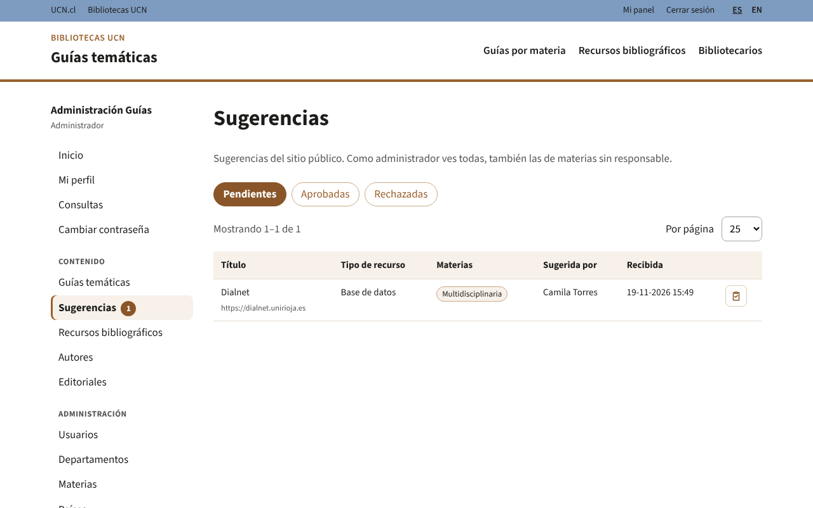
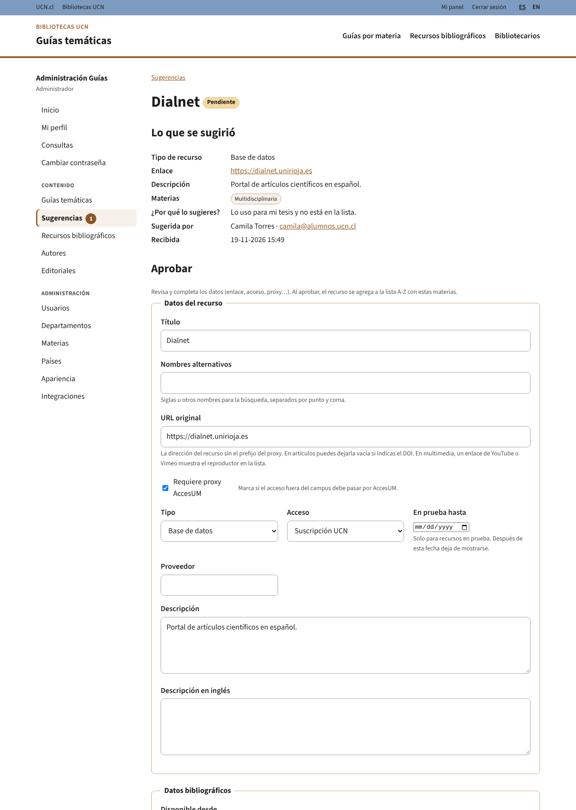

2. Funciones comunes del personal
Este capítulo vale para administradores, editores y colaboradores.

2.1 Mi perfil#
En Mi perfil completas los datos que aparecen en tu ficha pública del directorio de bibliotecarios y en el bloque «Perfil del bibliotecario» de las guías.

| Campo | Para qué sirve |
|---|---|
| Nombre, apellidos | Cómo te muestran en el sitio |
| Cargo y cargo en inglés | Aparece bajo tu nombre (el segundo, en la versión en inglés) |
| Departamento y sede | Agrupan el directorio |
| Ubicación | Oficina o piso, por ejemplo «Biblioteca Central, 2.º piso, oficina 204» |
| Enlace para agendar una cita | Página de Google Calendar, Microsoft Bookings u otra; se muestra como botón «Agenda una cita» |
| Teléfono | Opcional |
| Foto | JPG, PNG o WebP de hasta 2 MB, mejor cuadrada |
| Presentación y presentación en inglés | Texto breve sobre ti y tu trabajo |
| Materias de especialidad | Apareces como contacto en las guías de esas materias y recibes sus sugerencias de recursos |
| Mostrar en el directorio de bibliotecarios | Si lo desmarcas, tu ficha pública deja de verse |
Las materias se eligen en una lista agrupada por campo (las categorías ASJC de Scopus); el buscador de arriba filtra por nombre o código.
Ejemplo. Ana es bibliotecaria de referencia para Ingeniería y Geología. En Materias de especialidad busca «ingeniería civil» y «geología» y marca ambas; en Enlace para agendar una cita pega su página de Microsoft Bookings. Al guardar, su ficha pública muestra el botón «Agenda una cita», y las sugerencias de recursos de esas materias le llegan a su bandeja.
Para ver cómo te ve el público, usa Ver mi perfil público en el inicio del panel.
2.2 Cambiar contraseña#
Solo aplica si entras con contraseña propia (no con LDAP ni Google). Escribe la contraseña actual y dos veces la nueva, de al menos 12 caracteres. Una frase larga y fácil de recordar es más segura que una palabra corta con símbolos.

Si olvidaste tu contraseña, pide al administrador que te asigne una nueva.
2.3 Consultas de usuarios#
Cuando alguien escribe desde tu ficha pública («Escribir a…»), el mensaje llega a Consultas. La persona recibe una copia por correo con un enlace privado para seguir la conversación.

La bandeja tiene tres pestañas: Por responder, Respondidas y Cerradas. El administrador puede elegir entre ver solo las suyas o las de todos los bibliotecarios.
Para responder:
- Abre la consulta desde la bandeja.
- Escribe tu respuesta en Responder y presiona Enviar. Le llega a la persona por correo y queda registrada.
- Si el tema está resuelto, marca Cerrar la consulta al enviar, o usa Cerrar la consulta más abajo. Una consulta cerrada se puede reabrir.

Ejemplo. Camila, estudiante, escribe a Ana: «¿Cómo accedo a las normas ASTM desde mi casa?». Ana responde con los pasos para entrar por AccesUM. Si deja la consulta abierta y Camila contesta desde su enlace, la consulta vuelve a Por responder. Si Ana marca Cerrar la consulta al enviar, Camila ya no puede contestar en esa conversación y tendría que escribir una nueva desde la ficha.
Los correos salen solo si el administrador configuró el servidor de correo (ver 5.7 Integraciones). Sin él, las consultas se registran igual y se responden desde el panel, pero la persona no recibe el aviso.
2.4 Sugerencias de recursos#
El público puede sugerir recursos que faltan en la lista A-Z. Cada sugerencia la revisan:
- las personas que tienen alguna de sus materias en Mi perfil,
- los responsables y coeditores de guías de esas materias,
- y el administrador, que ve todas.

Al abrir una sugerencia ves Lo que se sugirió (tipo, título, enlace, motivo y quién la envió). Si ya hay un recurso parecido en la lista, aparece el aviso «Posible duplicado».

- Aprobar: revisa y completa los datos (enlace, tipo, acceso, si requiere proxy, materias) y presiona Aprobar y agregar a la lista. El recurso entra a la lista A-Z.
- Rechazar: opcionalmente escribe el motivo (queda registrado para el equipo) y presiona Rechazar sugerencia.
Una sugerencia revisada pasa a Aprobadas o Rechazadas con el nombre de quien la revisó y la fecha.
Ejemplo. Llega la sugerencia «Dialnet» para Multidisciplinaria. Al revisarla, compruebas que es de acceso abierto, eliges Acceso: Acceso abierto, desmarcas Requiere proxy y apruebas. Desde ese momento Dialnet aparece en la lista A-Z y se puede agregar a las guías.